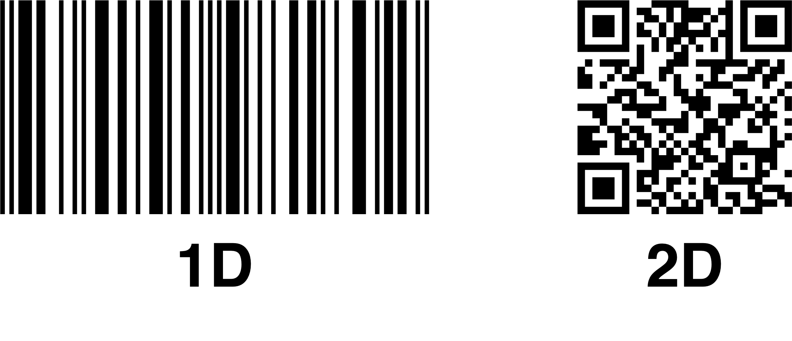

GCSE Link: None
 A barcode is a black-and-white image that represents some data in a machine-readable format.
A barcode is a black-and-white image that represents some data in a machine-readable format.
There are two types of barcodes: one-dimensional (commonly used to represent product ID numbers) and two-dimensional (such as Quick Response (QR) codes, used to represent anything from plane tickets to URLs).
Diagram 1 shows an example of each type of barcode..
 Diagram 1
Diagram 1

One-dimensional barcode readers work by moving a laser or LED light source across the barcode. A light sensor then measures the intensity of reflected light to work out if the bar was black or white. The bars are then converted into binary and sent to the computer.
Two-dimensional barcodes can be read using charge-coupled device (CCD)-based readers (using an array of light sensors instead of only one, and with no moving beam) or digital cameras (e.g. in your smartphone).
Using barcodes speeds up data entry and reduces human error. Barcode readers are also very cheap and can be easily integrated into most computer systems (the reader can send data as keyboard inputs).
 A digital camera is an input device that captures photographs, representing them as binary data.
A digital camera is an input device that captures photographs, representing them as binary data.
Light enters through the lens of the camera and is focused on the sensor. A colour filter array is placed above the sensor, which allows half of the pixels to detect green light, a quarter to detect red light, and a quarter to detect blue light. Each pixel produces an electrical current based on the light intensity received. This is converted into a digital signal using an analogue-to-digital converter, and the output is stored as a bitmap image.
 Radio Frequency Identification (RFID) is a technology used to identify and track objects wirelessly using radio waves.
Radio Frequency Identification (RFID) is a technology used to identify and track objects wirelessly using radio waves.
An RFID reader emits radio waves, generating an electromagnetic field. The RFID tag then sends its unique identifier back to the reader. The reader converts the signal into digital data.
The tags can be active (they have their own battery) or passive (they are powered by the incoming radio waves).
RFID can be used for fast, automated data capture. An advantage is that no line-of-sight is required, and the range is much longer than barcodes. However, they are more expensive.
 A laser printer is an output device that forms images on paper using powdered toner.
A laser printer is an output device that forms images on paper using powdered toner.
First, the cylindrical drum inside the printer is charged. Then, a laser draws the inverse of the image onto the drum, causing those areas to lose their charge. The powdered toner particles (which are oppositely charged to the drum) are brought near the drum, and are attracted to the charged areas (i.e. the areas not hit by the laser), which forms an image on the drum. This is then transferred onto paper and fused by heated rollers.
For colour printers, this process is repeated four times (once for each colour of toner: cyan, magenta, yellow and black).
 What are the advantages and disadvantages of laser printers compared with traditional inkjet printers?
What are the advantages and disadvantages of laser printers compared with traditional inkjet printers?
Advantages:
• Laser printers are faster than inkjet printers
• Toner is cheaper than ink, so laser printers have a lower cost per page
• Toner does not dry out, whereas ink does
Disadvantages:
• Laser printers have a higher upfront cost than inkjet printers
• Laser printers also use more power than inkjet printers
• Laser printers are larger and heavier than inkjet printers